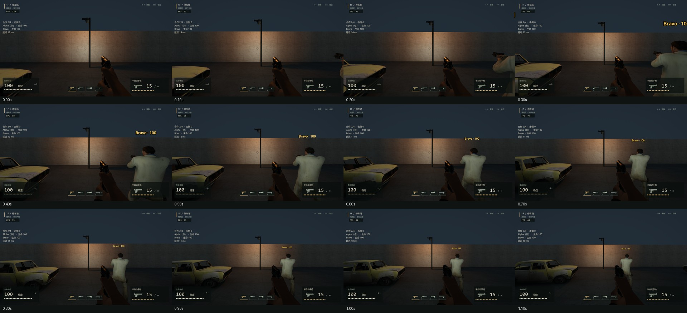
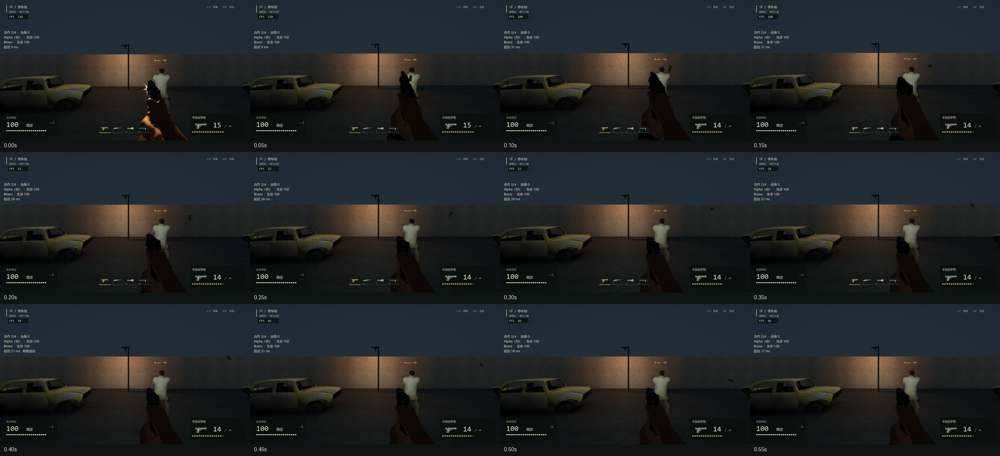
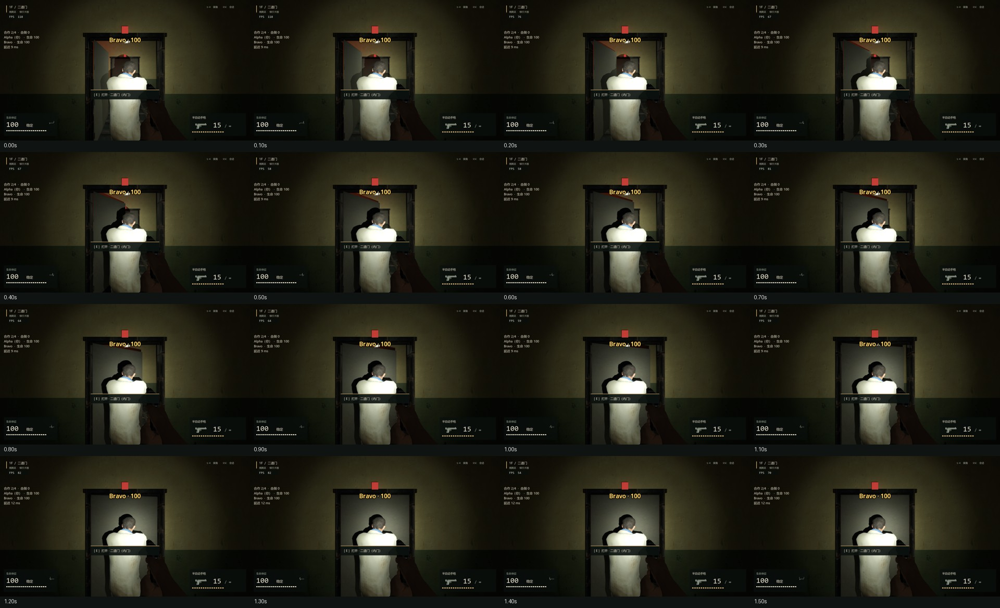
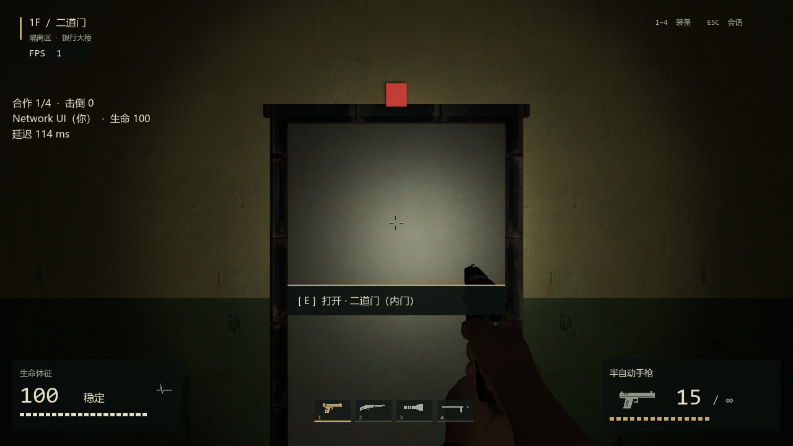
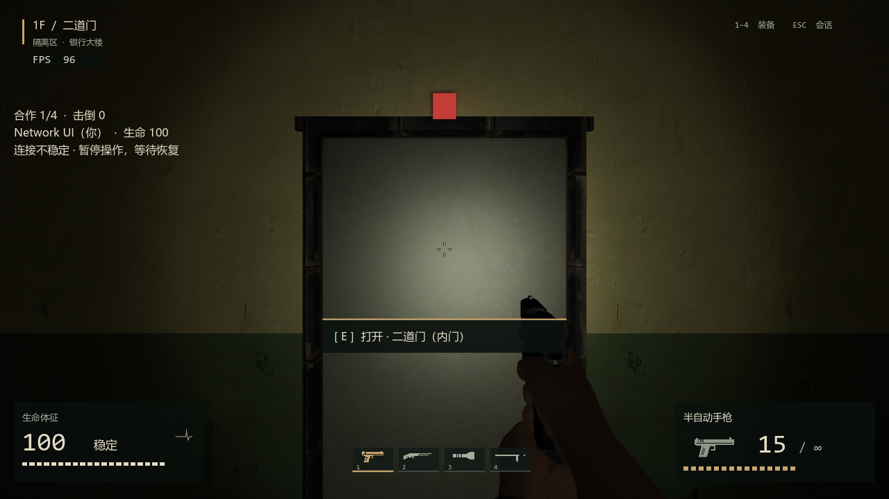
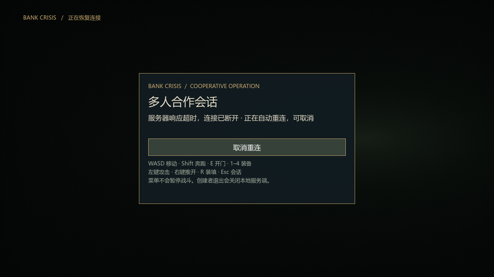
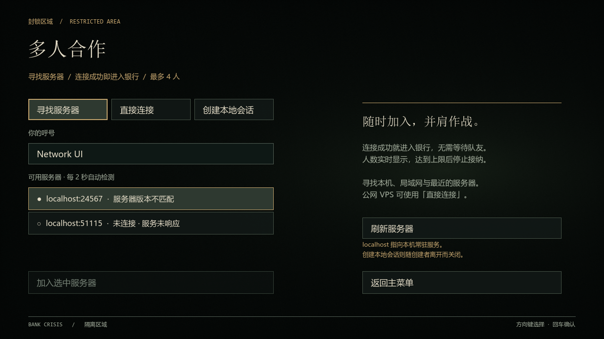
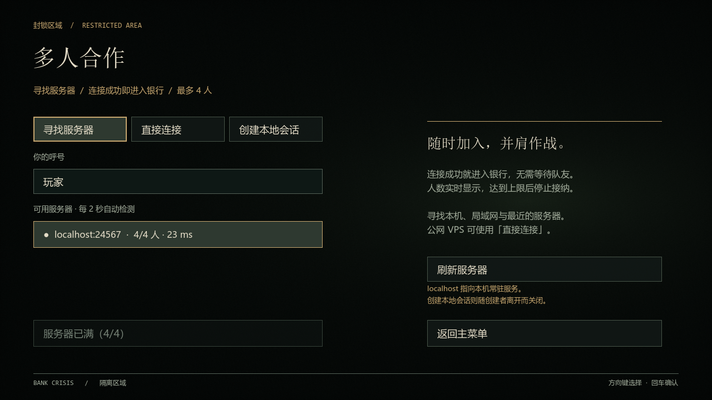
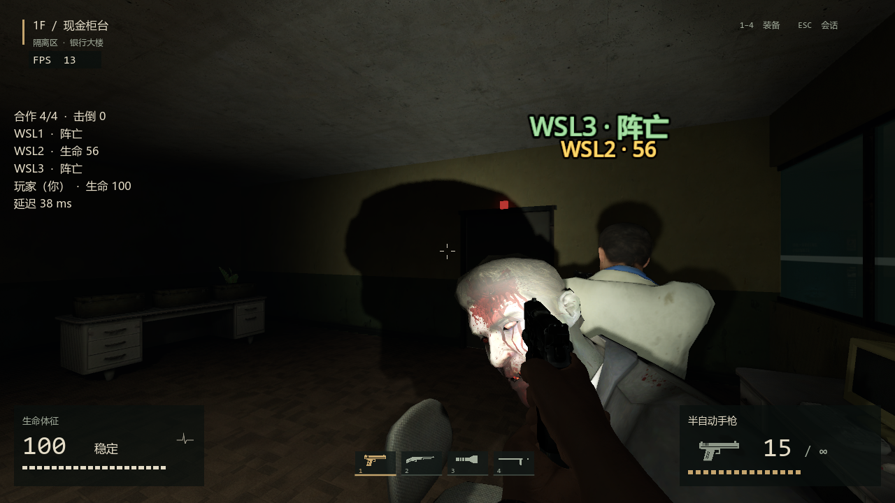
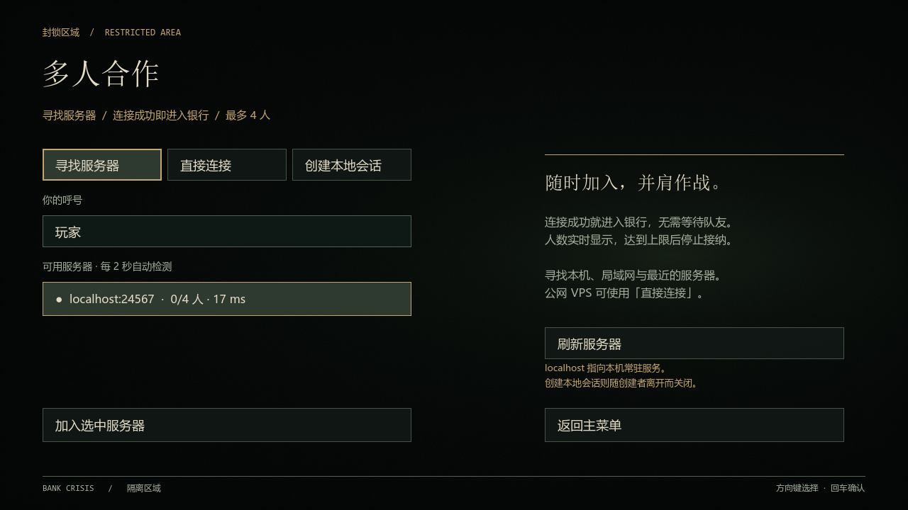

16 组主要网络用例完成；30% 丢包另两轮一轮失败、一轮完成。极高延迟/强抖动仍可明显回拉。本页是技术证据，不代表用户最终手感或美术批准。
汇总报告 · 逐轮指标 CSV · 原始日志、过程测量和失败记录 · 实现与限制
当前发布 Windows 与 Linux 均为协议 2 / bank-combat-v4；本地 WSL 实测四人、第五人拒绝、列表加入与主动离开后仍 0/4 在线。25 秒断网保留生命、弹药和位置。
下面的移动响应为进程逻辑测量，不是鼠标到屏幕延迟；快照 Hz 不是 FPS。截图中的 FPS 受并行测试/截图影响，不作为性能结论。
| 条件/轮 | 结果 | 本地移动 ms | 权威移动 ms | 快照 Hz 下限 | 移动校正最大 m |
|---|---|---|---|---|---|
| local/1 | completed | 28.0 | 71.0 | 9.996 | 0.0 |
| rtt100/1 | completed | 21.0 | 124.0 | 10.123 | 0.0 |
| rtt500_loss5/1 | completed | 16.0 | 337.0 | 9.853 | 0.0 |
| rtt800_loss10/1 | completed | 14.0 | 867.0 | 8.7 | 0.933 |
| rtt200_loss20/1 | completed | 20.0 | 179.0 | 7.137 | 0.0 |
| reorder_duplicate/1 | completed | 22.0 | 443.0 | 8.953 | 1.54 |
| rtt300/1 | completed | 18.0 | 236.0 | 10.046 | 0.0 |
| rtt800/1 | completed | 17.0 | 1026.0 | 10.047 | 1.167 |
| local/2 | completed | 29.0 | 85.0 | 10.097 | 0.0 |
| rtt100/2 | completed | 21.0 | 102.0 | 10.111 | 0.0 |
| rtt500_loss5/2 | completed | 15.0 | 508.0 | 9.473 | 0.467 |
| rtt800_loss10/2 | completed | 21.0 | 562.0 | 8.73 | 0.747 |
| rtt200_loss20/2 | completed | 23.0 | 240.0 | 7.522 | 0.0 |
| reorder_duplicate/2 | completed | 19.0 | 505.0 | 8.539 | 0.0 |
| rtt300/2 | completed | 18.0 | 413.0 | 10.098 | 0.0 |
| rtt800/2 | completed | 21.0 | 847.0 | 10.145 | 0.98 |
| rtt300_loss30/1 | failed | None | None | None | None |
| rtt300_loss30/2 | completed | 21.0 | 331.0 | 5.016 | 0.0 |
最高 1.54 米左右的校正可见，30% 丢包失败保留。服务器判定不受本地预测覆盖；缺少历史命中回溯、限带宽/真实 VPS/长期稳定性验证。
普通输入、固定模拟步长，等待截图时冻结世界。逐帧慢放 WebP

普通输入、固定模拟步长，等待截图时冻结世界。逐帧慢放 WebP

普通输入、固定模拟步长，等待截图时冻结世界。逐帧慢放 WebP







